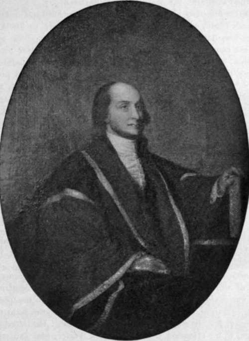

Robing Room Of The Justices And Offices Of The Clerk
Description
This section is from the book "The National Capitol. Its Architecture Art And History", by George C. Hazelton, Jr. Also available from Amazon: The National Capitol Its Architecture Art and History.
Robing Room Of The Justices And Offices Of The Clerk
The Clerk's offices are on the west side of the main corridor, and open from the vestibule, directly before the Court room, which contains Ionic columns similar to those within that chamber.
The robing room, once the Vice-President's room, to the north, is not open to the public. The justices, headed by the Chief Justice, cross from it to the lobby which leads to the bench, a moment before twelve o'clock, when the Court convenes, and return after adjournment. At such times, all traffic in the hallway is stopped by messengers of the Court, who stretch crimson cords across the corridor. This portion of the corridor was formerly-shut off by mahogany doors. The room thus formed was lighted by a window to the north and a large chandelier. It was reserved for the President when he came to the Capitol to sign bills or for other purposes.
On the right and left of the anteroom, which is artificially lighted, because it has no windows, are cabinets with glass doors, in which hang the black silk gowns of the justices, together with combs and brushes, which, in some instances at least, the casual observer might respectfully submit are superfluous. The inner room is much larger and contains three windows, the one at the end of the room affording the same fine view of the city as the western portico of the central building. These windows are draped with dark red curtains lined in yellow. In the center of the south side of the room is a fireplace, whose mantle, though not large, is delicately cut from Italian marble. On it is a French clock, which was purchased during the war. The room contains two cases of books, to the right and left of the fire-place, for ready reference by the justices. These embrace the Statutes at Large, the Reports of the Supreme Court of the United States, and a few other necessary books. A number of hair-cloth chairs attract attention for their oddity and rarity. They have been-well described as " a cross between an ancient ottoman and the curule chair of a Roman Senator." By pushing them together, sofas may be formed. There are also several high-back judicial-looking chairs, and a large table for writing. This furniture is very old. The carpet in the room was placed there in October, 1876.
Above the mantle hangs a painting in oils, which is one of the most interesting in the building. It is by Gray, after Gilbert Stuart, of John Jay, the first Chief Justice. The robe in which he appears is black, except its large flowing sleeves, which from just below the shoulders are brick-dust red, trimmed above and below with narrow silver-gray braid. About the neck is worn a kind of stole, which falls low in front like an edge to the gown, giving the effect of a collar. It is said that this was the gown of the University of Dublin, which conferred the degree of Doctor of Laws upon Jay, together with Adams and Franklin, at the close of the peace negotiations with England; and that he adopted it when he became Chief Justice. There is a story also that the Chief Justice borrowed the gown of Chancellor Livingston to wear until the Court should decide upon its costume; but, if so, he never returned it to that worthy judge; for it reverted to the Jay family after remaining in the possession of the Court many years. The picture was presented by John Jay, ex-Minister to Austria.
JOHN JAY.
To the right of this picture hangs an oil painting of Chief Justice Taney by Healey. It was executed when Taney was eighty-two years of age, nearly six years before his death. To the left of the fire-place hangs a corresponding picture in oils of Oliver Ellsworth, the third Chief Justice. It is charming for the rich, old-fashioned dress in which the artist represents the Chief Justice, who is seated by a table with a scroll in his left hand. The figure was copied from an old family picture preserved at Windsor, Connecticut, representing the Chief Justice and Mrs. Ellsworth seated at a table by a window, through which the house can be seen. It was thought to be the best likeness ever painted of the Chief Justice. This copy was made by Elliott, a Hartford artist, for the Court after the original by R. Earle (1792).
Opposite the fire-place hangs a large painting of the head and bust of Marshall by Rembrandt Peale, which is a worthy companion piece to his Washington, in the Vice-President's room. The artist has oddly framed the great Chief Justice on the canvas in a circular wall, at the top of which is represented a head of Solon, as if carved in stone; beneath the portrait is painted in large letters across the canvas: "Fiat justicia." The painting was presented to Chief Justice Chase by his legal admirers; and he bequeathed it, at the time of his death, to the Court.
To the right and left of the entrance door, at the eastern end of the room, hang portraits respectively of Chase and Waite. The former was painted for Henry D. Cook by W. Cogswell, when Chase was Secretary of the Treasury, and the date, " 1868," on the front of the painting must have been incorrectly placed there at the time of its lestoration after the World's Columbian Exposition, where most of these paintings were severely damaged. The portrait of Chief Justice Waite is by Cornelia Adele Fassett, and was purchased by order of the Joint Committee on the Library, soon after his death. It was painted in the robing room.
Upon the west wall hangs a portrait of Chief Justice Rutledge, which is a copy of a copy, made by Robert Hinckley, a Washington artist. The original picture, which was owned by Captain John Rutledge, a grandson of the Chief Justice, is a miniature by Trumbull.. This was copied for Mr. Justice Gray, and from it the present painting was made.
Upon the side walls at this end of the room are other pictures, the most noticeable of which is a portrait of Marshall, painted by Martin in 1814. The Court was anxious to obtain this picture, which was in the possession of descendants in Virginia. When the matter came before the Joint Committee on the Library, Mr. Evarts championed its purchase. He stated that it had been brought to his attention by Chief Justice Fuller, who said that it had been pronounced a good likeness by Mrs. Marshall. A photograph also of Marshall, by Rice from St. Memim's charcoal sketch from life, commands attention, as well as an engraving of Coleridge, Lord Chief Justice of England, which that eminent judge and jurist sent to the Court in grateful memory of the honor conferred on him on the 19th of October, 1883, when he was accorded a seat upon the bench of this highest American court during its session. The letter accompanying this gift, which hangs upon the opposite wall in a neat frame, requests the acceptance of the picture and its hanging upon the walls of some room occupied by the Court.
Continue to: